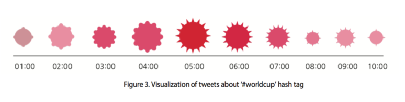

This project was for applying for IEEE Visualization 2014 Poster Session.
The purpose of this study was to introduce the Sawtooth Bubble Chart as a way to visualize the human emotional data. According to James Russell, human emotions can be explained by two constructs: valence level (from pleasant to unpleasant) and arousal level (from activation to deactivation). This study utilized the bubble charts to present those two constructs. To indicate various human emotions, the levels of valence were described by sawtooth on each bubble; the levels of arousal were described by different colors.
As the number of users of Social Networking Service rises, the demands for visualizing human emotions are increasing. Before this study, most of visualization methods were based on unidimensional classification of human emotions. However, extracting detailed human emotions are getting easier thanks to the development of the text mining algorithm. Therefore, this study proposes new visualization methodology which can express multidimensional human emotions more effectively.
There are two steps for sawtooth formation. First, the shape of sawtooth should be decided. After that, the number of sawtooth on bubble should be decided. The shape of sawtooth indicates the valence levels (from unpleasant to pleasant). For example, the round shape of sawtooth represents pleasant; the sharp shape of sawtooth represents unpleasant; no sawtooth (only bubble) represents neutral.
The colors of bubbles represent arousal levels. If the color of a bubble is dark and solid, it means they are deactivated while it means activated if the color of a bubble is light and less solid.

In this application, data used for visualization were tweets which have ‘#worldcup’ hash tag and were mentioned in June 23, 2014 from 1am to 11am in Korea. There was a football game between Algeria and Korea in 4am, and Algeria beat Korea. Extracted data show that arousal level of people rose between one hour before the game and one hour after the game. This result presented as lightened bubbles. Next, valence level scored high before the game, but the level dropped after the game because of Korean football team’s defeat.
TThis visualization application shows tweets that mentioned about “GeunHye Park”(the president of Republic of Korea) in May, 2014 and categorized by age group and geolocation. Arousal level scored high in the younger age group, and valence level scored low in the ‘Gwangju. This result indicates that human emotions cannot be divided by unidimensional classi cation, but can be divided by multidimensional classi cation using valence level and arousal level.